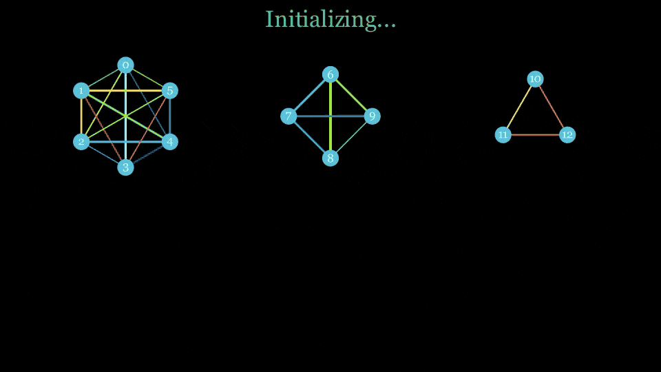

Quantum systems software · Research engineering · 2026
Hardware-Aware Partitioner & Scheduler Research
A capacity-aware circuit partitioner evaluated through an inherited scheduler/simulator, with merged partitioning work kept distinct from unmerged search research.
- Partitioner merged and locally verified
- Scheduler research remains opt-in
- Simulation evidence; no hardware validation

01
Problem
Splitting a quantum circuit across several capacity-limited ion chains is not only a graph-partitioning problem. Every cross-chain interaction can require modeled transport, so a partition that looks efficient statically may perform poorly once a scheduler applies capacity, timing, and error constraints.
The practical question was therefore not simply “how few edges are cut?” It was “which legal partition still behaves well when executed through the system model?”
02
My role
I developed most of the capacity-aware partitioner and its benchmark and analysis harnesses. The merged work added temporal and graph-based candidate families, legal-capacity handling, regression checks, and scheduler-in-the-loop comparisons.
I also extended an inherited, QCCDSim-related scheduler/simulator to investigate transport-aware search and model correctness. That scheduler base predates my work; the research extension was maintained separately from the merged partitioner.
03
Constraints
- Legal capacity: candidate assignments must satisfy a fixed chain count and allowed chain sizes.
- Execution order: early two-qubit interactions can matter more than a static interaction graph suggests.
- Model coupling: shuttle choices change modeled time and error, so scheduler semantics affect partitioner conclusions.
- Search scale: exact search grows combinatorially and is useful mainly as a small-case oracle or diagnostic.
- Evidence consistency: timing, error, and transport models changed during the work; results from different model dates are not directly interchangeable.
04
Partitioner methods
The partitioner generated multiple candidate views of the same circuit rather than committing to one heuristic. Temporal grouping preserved early executable structure; graph-based candidates used connectivity and spectral structure. Capacity-aware trimming, rebalancing, and repair converted those candidates into legal assignments.
Design principle: use static structure to generate candidates, then let execution-facing metrics challenge the partition. A graph cut alone is not treated as the final answer.
05
Validation evidence
The partitioner change set was merged into the project’s main branch. At the reviewed merged commit, a local no-bytecode rerun of the Step 1 indexed-equivalence check passed 72 runs. Committed experiment records also preserve scheduler-backed synthetic sweeps, ablations, and baseline comparisons.
- Correctness scope: the 72-run check verifies indexed-equivalence behavior for Step 1; it is not a claim of full end-to-end correctness.
- Benchmark scope: reported ratios are normalized to a stated baseline on synthetic circuits.
- Model scope: the merged partitioner benchmark predates later scheduler corrections and cannot be presented as current system performance.
06
Beam search: useful, but not an answer
A separate research branch asked whether looking beyond the next locally cheap action could improve schedule quality. Dynamic beam search kept several partial schedules alive and ranked them after a fixed lookahead horizon, using the same simulator semantics as the matched greedy baseline.
Restricted allowed-size cases showed repeatable quality gains in the recorded sample, but unrestricted cases still traded modeled error, transport, and runtime. The tested restricted setting improved the three recorded quality ratios relative to matched greedy runs while averaging approximately 297 times the local wall time.
Research pivot: after the main beam parameters had largely converged, the useful question was no longer “which width should I try next?” It was “does beam miss the right action, or does it generate the right action and rank it incorrectly?”
07
An exact oracle exposed where beam lost the path
I built a uniform-cost exact oracle over the simulator’s own successor rules. It enumerated ready cross-chain gates and legal transport options without beam caps; because the accumulated negative-log fidelity loss is nonnegative and additive, the first zero-failure terminal state popped by the search is optimal under that action model.
| Qubits | Beam exactly optimal | Mean beam / optimum | Oracle expansions |
|---|---|---|---|
| 4 | 4 / 5 | 1.020× | median 3 |
| 6 | 5 / 5 | 1.000× | median 14 |
| 8 | 3 / 5 | 1.063× | median 79 |
| 10 | 0 / 5 | 1.221× | median 862; max 2,485 |
| 12, seed 5 | 0 / 1 | 1.421× | 32,995 |
The N=12 case generated 142,276 children, retained 108,284 unique states, and took roughly 34–39 seconds. Exact search therefore worked as a small-system diagnostic, not as a scalable scheduler. Under the working dense-circuit assumption that two-qubit work grows on the order of N2, the search burden was expected heuristically to scale as O(exp(N2)); this is a regime-specific scaling expectation, not a proven bound for every circuit.
The more important result came from tracing eight known non-optimal beam runs to their first departure from an oracle-optimal prefix. In all eight, an optimal immediate commit had been generated and survived into the final candidate list. Beam did not lack the action; it preferred a cheaper-looking short-term prefix, or in one tied case used generation order to choose the worse future topology.
08
The missing signal was remaining cost
To separate immediate action quality from the future it creates, I extended the oracle to score every saved first-commit candidate. For a root state s and candidate a, the exact action value is the loss paid now plus the optimal remaining suffix:
The first audit traced eight deliberately selected beam failures to the point where they left an oracle-optimal path. In every case, an optimal immediate commit had been generated and retained. Beam did not lack the action; it ranked the future state it created too weakly.
Because those roots were selected for failure and concentrated early in circuit execution, I did not treat their original mean correlation as a population estimate. A follow-up exact pilot sampled 38 real decision states and 136 retained commits across four progress bands. Mean within-state Spearman correlation between exact suffix cost and Q* regret was 0.604, 0.574, 0.879, and 0.926 from early to late progress.
The result did not support the hypothesis that future cost becomes less informative later in the circuit. It did not, however, make exact suffix cost a deployable ranking feature: V* is part of Q* by definition, and late states often retained only a few candidates, making rank correlation easier to saturate. The useful conclusion was narrower: immediate loss alone could not represent the topology-dependent consequences of a commit, while exact future cost provided an offline truth label for testing practical approximations.
09
From cost-to-go to safe UB/LB pruning
Full Q* is exponentially expensive. I therefore tested whether two admissible lower bounds could recover part of its decision signal: a gate-loss floor for remaining work and a cut-matching transport bound for the minimum qubits that must cross adjacent chain separators.
Their sum is h; adding the loss of the immediate macro action gives a lower bound on the complete action value, QLB. I evaluated these quantities on 150 fresh circuits spanning dense, sparse, and clustered structures: 646 progress-conditioned decision states and 2,926 retained first commits. Correlations were computed within each state, averaged by circuit, and then balanced equally across circuit types. Confidence intervals used 10,000 whole-circuit cluster-bootstrap samples.
| Circuit progress | ρ(h, V*) | ρ(QLB, Q*) | QLB top-1 overlap |
|---|---|---|---|
| 0% | 0.414 | 0.517 | 69.8% |
| 20% | 0.552 | 0.497 | 67.8% |
| 40% | 0.549 | 0.581 | 84.0% |
| 60% | 0.664 | 0.623 | 83.3% |
| 80% | 0.801 | 0.760 | 93.8% |
| Overall | 0.593 | 0.592 | 79.7% |
The progress labels are bucket centers rather than exact sample points: 0%, 20%, 40%, 60%, and 80% denote [0%, 10%), [10%, 30%), [30%, 50%), [50%, 70%), and [70%, 90%). The combined bound carried a moderate but consistent future-cost signal: overall ρ(h, V*) was 0.593 with a 95% confidence interval of [0.546, 0.638]. After immediate action cost was restored, ρ(QLB, Q*) was 0.592 [0.549, 0.635], and the lower-bound score selected a Q*-optimal retained action in 79.7% [76.3%, 82.9%] of states.
The signal generally strengthened toward the end of the circuit, but not monotonically. Early top-1 agreement remained only about 68–70%, so the lower bound was useful evidence rather than a reliable replacement for exact action values. Candidate pooling was deliberately excluded from the headline result because shared progress trends inflated the pooled correlations.
The useful combination emerged in a dynamic bounded frontier. A feasible completed schedule supplies an upper bound, while each partial branch is expanded by its accumulated loss plus both lower bounds. A branch is pruned only when it cannot beat the current feasible completion.
Admissibility also made the score useful as a certificate. Against a reachable upper bound, the combined lower bound could strictly eliminate an increasing share of non-optimal retained commits as the circuit progressed:
| Circuit progress | Strict prune |
|---|---|
| 0% | 6.9% (34/493) |
| 20% | 10.7% (57/533) |
| 40% | 23.0% (100/434) |
| 60% | 34.3% (120/350) |
| 80% | 53.5% (114/213) |
| Overall | 21.0% (425/2,023) |
No false strict prune was observed in the 150-circuit study. This static retained-candidate diagnostic is separate from the dynamic bounded-frontier experiment below: the former measures immediate pruning opportunities at sampled states, while the latter counts expansions accumulated while solving complete suffixes.
| Lower-bound configuration | Strict expansions |
|---|---|
| No lower bound, h=0 | 35,517 |
| Gate bound only | 723 |
| Cut bound only | 10,448 |
| Gate + cut bounds | 173 |
Audited result: across the candidate suffixes, independent uniform-cost search required 116,550 aggregate expansions. The reachable-UB frontier with both lower bounds required 173, agreed with exact Q*, and produced zero false strict prunes. The counts are aggregate expanded states, not generated children or a per-circuit runtime claim.
10
What the evidence changed
- Merged partitioner: retain the legal-capacity candidate generator, regression checks, and scheduler-backed evaluation harness.
- Beam search: keep it opt-in; the recorded quality gains did not offset the runtime cost or explain why it failed.
- Exact oracle: use it for small-system diagnosis. It showed that beam’s central failure was ranking available actions without enough future-cost information.
- UB/LB path: continue as an offline bounded decision-oracle direction because it combines a reachable completion with safe, complementary future-cost bounds.
- Rejected shortcuts: do not treat a static graph cut, a larger beam budget, or a hand-tuned immediate score as a substitute for execution-aware evidence.
11
Limitations
The scheduler/simulator extension remains an unmerged, opt-in research branch. Dynamic beam did not replace the public default, and the UB/LB work remains an offline bounded decision-oracle direction rather than production scheduler logic. Because an inherited gate-time calculation was corrected during the work, older timing-sensitive results remain tied to their original model and should not be compared directly with later runs.
The evidence is dominated by random synthetic circuits and model-based metrics. Real-application coverage, hardware calibration, coherence and error assumptions, publication-scoped baselines, and production-scale exact-search completeness remain open. The original 38 Q*-labeled candidates came from selected failure roots; the follow-up exact pilot broadened progress coverage but remained limited to 38 states and 136 retained commits, with small candidate sets late in the circuit. The 150-circuit lower-bound study provides broader validation, but it still follows sampled current-policy trajectories rather than a production workload distribution. None of these samples is a training dataset. No trapped-ion hardware execution or production deployment is claimed.